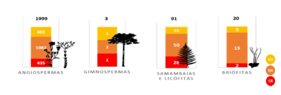

Flora
Quando falamos da flora, normalmente estamos nos referindo ao grupo de plantas de uma determinada região.
Como exemplo, podemos citar também a flora do Pantanal, que, segundo o Ministério do Meio Ambiente, é formada por quase duas mil espécies de plantas.
A destruição da flora provoca diversos danos ambientais, uma vez que as plantas estão relacionadas, entre outras funções, com o regime de chuvas,
com a manutenção do solo e com a garantia de um ambiente saudável para a sobrevivência de várias espécies.
Portanto, ao retirar a cobertura vegetal de uma área, estamos afetando diretamente a fauna daquela região, desencadeando desequilíbrios ecológicos.
O termo flora possui ainda outras aplicações, sendo usado para designar, por exemplo, o conjunto de micro-organismos encontrados em nosso corpo.
A flora intestinal, que é composta por diferentes bactérias que vivem no intestino, é um exemplo dessa aplicação.
Além de ser usado para dar nome ao conjunto de plantas de uma região e para o conjunto de micro-organismos encontrados no nosso corpo,
o termo flora é usado para dar nome às obras que possuem como objetivo descrever as espécies vegetais de um local.
A Flora brasiliensis, por exemplo, é uma obra que descreve 22.767 espécies de vegetais.
Lista Nacional de Espécies Ameaçadas de Extinção
Em dezembro de 2013, o Centro Nacional de Conservação da Flora do Jardim Botânico do Rio de Janeiro (CNCFlora/JBRJ) concluiu a avaliação do
estado de conservação de 4.617 espécies da flora brasileira. Esse estudo subsidiou a atualização da Lista Nacional Oficial de Espécies Ameaçadas de Extinção.
Atualmente, são 2.113 espécies da fauna consideradas ameaçadas em diferentes categorias:
Extinta na Natureza - EW;
Criticamente em Perigo - CR;
Em Perigo - EN;
e Vulnerável – VU.
As principais ameaças identificadas são: perda de habitat devido a expansão agrícola e grandes obras de infraestrutura;
sobre-explotação e tráfico, e espécies exóticas invasoras.
